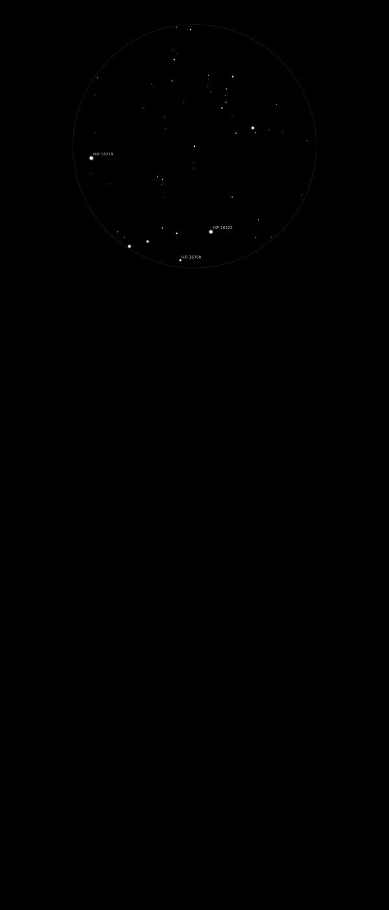

Comet
Lovejoy
C/2014 Q2 Lovejoy
Mag 3.8 at brightest
Discovered by Terry Lovejoy on 17/08/14
13/01/15
Passing between Taurus and Cetus on a line parallel to and just
above Lambda Tau (HIP 18724) and Omicron Tau
(HIP 15900)
Easily visible in binoculars at 6pm as a large hazy blob around
Mag 4
Sky not quite dark and no tail visible at first
As the sky darkened Comet Lovejoy became visible to
the naked eye with just a hint of a tail discernable
in binoculars
In 25mm a large bright hazy blob with a bright core but only a
hint of the tail, forming a triangle with HIP 16738 at Mag 8.25
and HIP 16822 at Mag 8.40
However at 6.55 the sky suddenly clouded over and the
rains arrived!
Stellarium screenshot taken
during the observing session with Comet Lovejoy added
16/01/15
Tight bright centre rapidly fading, a hint of a tail, or
possibly two about 30 apart
Still around Mag 4
In 25mm FOV sits at the focus of an arc of four stars
HIP 15381 Mag 7.50, HIP 15412 Mag 8.70, a Mag 10.30 star and HIP
15588 Mag 8.60
Noticeably changed position between 6.30pm and 8pm, heading
towards the Mag 10.30 star and moving approx 5th of the FOV,
0.23
No more structure visible in 12mm but nucleus seems denser
Two Stellarium screenshots, 6.57pm and 8.04pm with Comet Lovejoy
added
24/01/15
Still an exciting binocular object, at about Mag 4.5 although no
tail visible
06/02/15
Still a very clear binocular and finderscope object, not quite
at naked eye visibility
In same binocular FOV as Almaak (y And, 57 And) at Mag 2.15, a
very neat double star
Very yellow (y1 And) with it's companion (y2 And) much whiter
with a hint of blue
Two (nearly) FOVs away in 25mm Comet Lovejoy has a very tight,
bright nucleus and then rapidly fades away, but the tail is much
more apparent than on previous observing sessions, and appears
to stretch more than halfway across the 25mm FOV
13/05/15
Took some finding
Still visible and impressive in 25mm and 12mm
Appears as an approx Mag 9 Galaxy, no hint of any tail but quite
tight and bright between stars of Mags 10.75 and 11.05
Stellaruim screenshot taken
during the observing session with Comet Lovejoy added (not
sure why Stellarium date shows 01/05/15)
Position established using 'The
Sky Live' webside, this is the screenshot of the position
21/05/15
A faint approx Mag 9 blob but with quite a bright core
Close to the glorious white/yellow star Hip 5372 at Mag 4.20,
between it and a neat asterism of Mags 10 and 11 stars forming
an arrowhead
Stellarium screenshot taken at
23:46 with Comet Lovejoy added
{kind=link}
{kind=link}
{kind=link}
{kind=link}
{kind=link}
{kind=link}